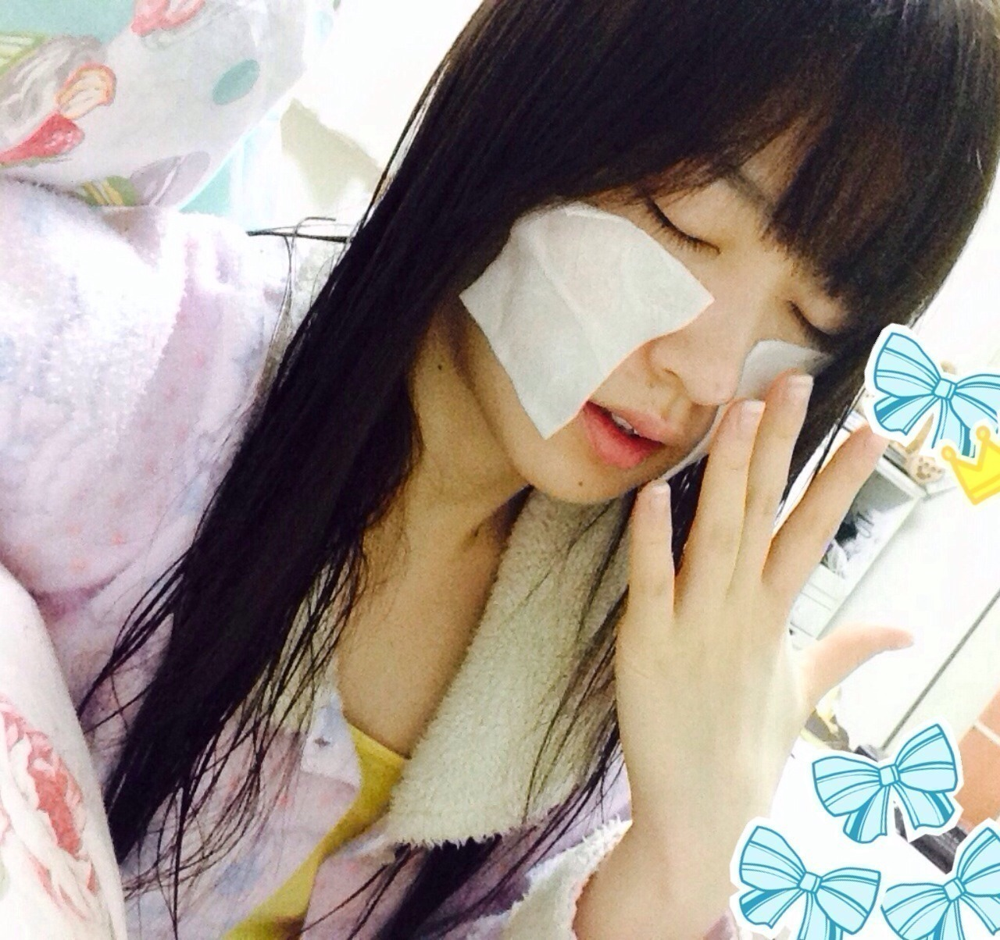
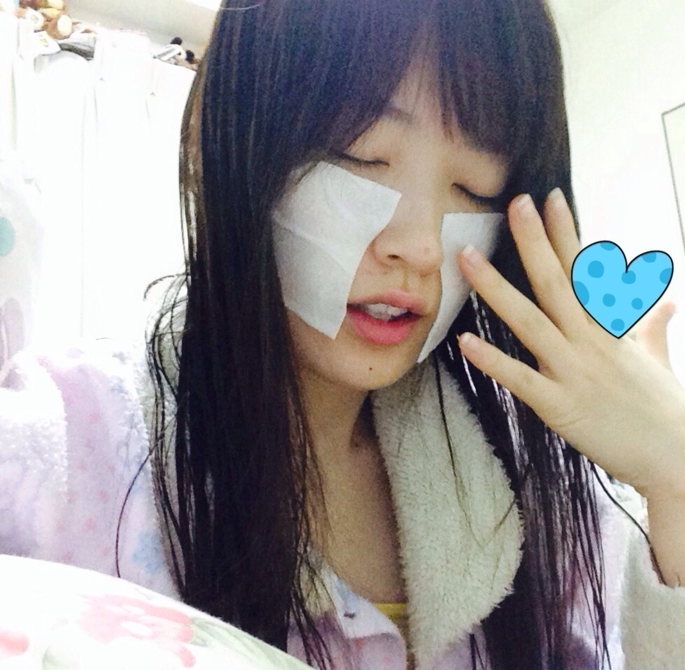

2014/0122Wed（´-`）.｡oO(かずみ ん×260
バケラッタ♡
いつも応援ありがとう！！
一億人の親戚っ♪
カーキュリーこと
高山一実です☆
コメント見ましたっ♡
皆さん優しい...(T_T)らぶ
松茸さん意外と好評でよかた！！
前回みなさんには
いい夢見ろよと言ったのに
自分は
16mmのデカイコンタクトを
目入れたら取れなくなったという
簡単だけど恐ろしい夢でした！
まずはお知らせ☆
→今日はソニレコ配信日
皆さんみてねー( ∩ˇωˇ∩)♡
マイ様の癒し顔とか
Kちゃんの面白い話とか
kazの鍋を食べる姿が見れるよ！笑
相変わらず紙コップのふちを
噛んでしまいます(´・ω・｀)
見たい映画がたくさーーん
ありました！！
＊モンスターズユニバーシティ
＊クレヨンしんちゃん バカうまっ! B級グルメサバイバル! !
＊舟を編む
借りたかったけど新作だったので
まだ待ちます(∩*´ω` *∩)笑
↑のどれか見た人いるかな！？
私は映画を殆ど観に行かない人で、
自分で映画館へ足を運んだのは
金色のガッシュベル!! メカバルカン＆101番目の魔物
と
ステキな金縛り
です。笑
...私の地元には映画館が
なかったので(⌒-⌒;
ガッシュは
フェリーで横須賀まで行って
観に行きました〜！！
東京来てから今だにトライしてない！
今度行くとしよう♪
そういや、この前じょーさん
一人映画ハマったとか言ってたな〜笑
最近の私のマイブーム。

寝る前にアルビオンの
スキンコンディショナーで
パック！
まいやんもこの化粧水使ってて
めっちゃいいと聞いたので
買いました！！！

そしてキールズのリップ♡
メイクさんにお仕事で
塗ってもらった時、
なんだか懐かしい香りがして
即買っちゃいました♪
リップにパック
女子っぽいやろ〜(*´ｰ`*人？笑
嬉しいことに、
最近どんどん女の子のファンが
増えてる気がするの！
だから今日のブログはちょっと
女の子を意識してみました♡
私も常に美しくなれますように。
もっと頑張るぞ！
それでは、
明日も頑張りますっ(*^o^*)
おやすみなさい...☆
最後に
市來先生、いくちゃん、新内ちゃん
誕生日おめでとうでした〜♡
私もあと少しだな♪うぎうぎ
2014/01/22 23:12


コメント(697)
ガッシュとか自分も好きで漫画全巻あるよ（≧∇≦）
ソニレコ見たよー
女子力ないってタレコミあったから女子力アピールのブログ？（笑）
写真思いっきりお風呂上がりだね
写メなんて取ってないで髪乾かしなー風引いちゃうからさー
それじゃあテスト勉強しまーす！
うぎうぎo(^_^)o
かずみん安定のかわいさ♪
体調管理気を付けてねp(^^)q
ムーミンより…
ソニレコさいこー＼(^o^)／
おもしろいよー
そんなにでかいやつ入らんやろっ笑
いいなぁ〜映画っ！！
僕も全然映画見れてないから
見れるといいなぁ〜なんて
思ってます。。。
借りろやって話ですけどね。笑
ては頑張りますっ！！
映画最近全く見に行けてないわ俺…
今日も一日お疲れ様でした！
あっ！ソニレコ見なきゃ！
明日も無理せず頑張って下さい(*^◯^*)
ほな、ばいなら
風邪引かんとってな！！
ばけらったぁぁぁヾ(＠⌒ー⌒＠)ノ
まいやん
すごいなー今日のブログ！
女子力高い！
あ、こっそり教えて！乃木坂で1番女子力高いメンバーって誰？
これからいっぱい観に行って下さい。
こうき@ポジティブの友達だよ！
ソニレコバイト終わったら見るね！
てかモンスターズユニバーシティもう出てるんだ！
Tカードの更新するときに無料で借りれるから借りようかな∩^ω^∩
メカバルカンの来襲ワロタwww
かずみんってバルカン作ったことある？笑
おやすみ！
ふくぽんず(｡>﹏<｡)ﾉ⊿ です
すごい女の子してる～(゜▽゜*)かわいいな～
僕にはよくわからんけどなんかパック貼る画像あげるあたりツボだわ～(*^^*)
では、ふくぽんず(｡>﹏<｡)ﾉ⊿ でした♪
次こそいい夢見ろよ
リップパックやってみようかなぁー
ちなみに15歳、中学3年生、受験生です(＾ｰ^)ノ
ソニレコチェックしときますね！
モンスターズユニバーシティは妹が見たいと言っていたので、一緒に映画館で見ました！面白かったですよ(´▽`)ノ
何だろうかずみんのブログはすごくコメントしやすい！
まいまいとのソニコレ見たよーー！
流石可愛かった！
おやすみなさゆりん(u_u)zzZ
うぅぅぅ……アメイジング＼(^o^)／
仕事終わりで変にテンション高い!!
かずみんかわいい(〃'▽'〃)
キュートやね!!
舟を編む何気に観たい(￣▽￣)
おもしろいんかな〜
自分は洋画をよく見るっ
アクション系( ´ ▽ ` )ﾉ
かずみんアクション系どーなんかなっ
おやすみなさい
どモッ、マロンくん(´･Д･)」
いやはや
メイクはわかりませぬ！！
今回は、❌なんで
ま、ズーさんをよりメイクで可愛くしても
正直ドッチもずーさんだ。！！
では、またねー
バイチャキ( ´ ▽ ` )ﾉ
俺はストローかんでまう…
モンスターズユニバーシティみたよー
めっちゃおもろかった（≧∇≦）
みるべし！！
きゃーー風呂上がり(((o(*ﾟ▽ﾟ*)o)))
女子力（笑）
ファンデーションKさんに買ってもらいや～～(笑)
またコメントするわ～～～～～(m--)m
あと、ソニレコみたよ！
相変わらずゆる～いね(笑)
明日もがんばれー
いやぁかずみんの美の秘訣はそこにあったんですな(*´ω｀*)
どんどん綺麗な女性へと成長してほしいです(*´ω｀*)
クレしん好きけどその映画はまだ観たことなかった、、、
一番好きなクレしんの映画を教えてください(*´∀｀*)
暇つぶしも楽しかったよ♪
春菊苦手なのはしゃーなし！
鍋が食べたくなりました(*´∀｀*)
じゃね！アメイジング＼(^o^)／
佑キングから佑キング（京都人）に名前変更しました＾＾
カーキュリー
8ｔｈの握手会でかずみんとこ行くね＾＾
コンタクトが目からとれないって痛いね(´д｀)
ちょっとリアルでゲスおもしろい笑（乃木どこより）
ソニレコあとで見とくよ！
映画ここ最近見に行ってないなー(￣0￣)
でも金色のガッシュベル～メカバルカンの来襲～は見たよ(￣∇￣)
かずみん、やっぱりガッシュ好きなんだね！かずみんと気があうなー(´▽｀)自分もめっちゃガッシュ好きなんだよね(*⌒▽⌒*)
101番目の魔物は見たのかな？
かずみん、激カワですっ！
惚れてまうやろ〜（≧∇≦）
こんばんバケラッタ(≧∀≦)
握手会では、胸元のバラが目印！
名古屋の「すかたん＠重陽の節句」です。
いつもブログ更新ありがとうね（＾－＾）
かずみんも良い夢観れます様に♪
ソニレコ♪
観るからね( ´ ▽ ` )ﾉ
紙コップのふちを噛むかずみん♪
そんな所も可愛いよ(*^^*ゞ
観たい映画♪
準新作か旧作になるまで待つのかな（＾－＾）
自分はどれも観ていないけど
舟を編むは観たいと思ってます(o^ω^o)
映画館♪
好きな映画を観に行けると良いね（＾－＾）
自分は永遠の０を観に行こうと思ってます(o´▽｀o)
リップにパック♪
もちろん女子っぽいよ(*^^*ゞ
っていうか、100%可愛い女子だけどね(≧∀≦)
女の子のファンが増えて良かったね(o^ω^o)
お仕事楽しんできてね(*´･ω･)ﾉｼ
かずみんが今日も明日も
楽しい一日を笑顔で過ごせますように♪
それでは、今回はこの辺で♪
ポジピース♪(`･ω´･ ●)Ｖ
うぅぅぅ……アメイジング＼(^o^)／
仕事終わりで変にテンション高い!!
かずみんかわいい(〃'▽'〃)
キュートやね!!
ガッシュは両方見に行った(＾∇＾)
メカバルカンと101番目の魔物
最近のかずみんは
女の子というより大人の女性って
雰囲気が出てきた感じがする
セクシーカーキュリー( ´艸｀)
16mmのコンタクト！！！めっちゃデカイね
あっ、夢にかずみんが出てきて、一杯お話をする夢を見たよ〜（＾Ｏ＾☆♪
幸せな気持ちでした。
映画館で、ステキな金縛り見たよ〜
あの映画好きです〜
パックに、リップ。かずみん、女子力高いね。
素敵なかずみんに変身ですね。
これからも応援しています。
私も頑張ります。
バケラッタ！！！
ソニレコ配信されたね！！！
さっき見たよ！！！
なんか今日は疲れたけど
かずみんの笑顔見てたら
全部どーでもよくなって
リラックスできたｗｗｗ
ありがとうね！！
そしてTSUTAYAの話！！！
久しぶりに行くDVDコーナーの
宝庫感ってヤバいよね！？
ぜーんぶ見たくなっちゃうのよアレｗｗｗ
しかも
新作は借りられる期間が短くなるから
準新作以下じゃないと借りないのも
結構あるあるだね！！！
でも
最近の私の場合は大学に入って
映画館がチョットだけ近くなったから
結構１人映画しちゃうね！！！
慣れれば楽なんだけど
最初は敷居たかいかもだよね！！！
とりあえずトライしてみてｗｗｗ
ではでは
hayato・たまご・スマイルマンでした♪
かずみんと同じリップほしい！
オススメのグロスとかありますか？
俺は年間に１人で映画館行って30本くらい見るよー！
大学時代の頃からの趣味だから、
もう300本は見てるのカナ？
ぶんぶん☆
（またの名を46分にコメントする男ｗ）
かずみんっ＼(^o^)／
初コメントするよ˚*(ृ ॑꒳ ॑ ृ )ु˒˒˒！
なんかね、かずみん気になるのっ♡！
とっても可愛くてBlogの画像保存してる＼(^o^)／
私も化粧水とリップ真似してみようかなっ(*ฅ́˘ฅ̀*)♡
またコメントしまーすっ＼(^o^)／♡
三浦しをんさんの舟を編むは、小説は読んだけど、映画は観てないな。
けど、小説は面白かったよ。
ソニレコまだ見てないから、またゆっくり見るね。じゃあ、明日も、ポジティブでいきましょ♪
更新楽しみに待ってました(((o(*ﾟ▽ﾟ*)o)))
かずみんはガッシュベルほんまに好きやねんなー♪
うちも昔アニメで見てた！
かずみんが好きなデジモンもうちも大好き(>_<)♡
かずみんの地元は映画館とかはなくても、その分人の温かさに溢れた素敵なところやね(*´ω｀*)
だからこんなに素敵なかずみんが育ったんや！！（笑）
女ファンの一人です( °_° )←
かずみんは常に美しい！可愛い！時々かっこいい！
マネージャーさんに女子力上げなさいって言われるそんなかずみんが大好き♡（笑）
かずみんはなんか、身近に感じれるところが魅力の一つやと思うな(*´ω｀*)
実習中で辛い毎日やけど、かずみんパワーで頑張れる！
ソニレコ見てめちゃくちゃ元気出た！
かずみんに牡蠣を差し入れしてあげたい*･゜ﾟ･*:.｡..｡.:*･'(*ﾟ▽ﾟ*)'･*:.｡. .｡.:*･゜ﾟ･*
うちももうすぐ誕生日やねーーん(((o(*ﾟ▽ﾟ*)o)))
かずみんと近いから嬉しい♡うぎうぎ
かずみんにとって明日もポジピースでアメイジングな日になりますように*･゜ﾟ･*:.｡..｡.:*･'(*ﾟ▽ﾟ*)'･*:.｡. .｡.:*･゜ﾟ･*
とか言いつつぼくもポケモンみたりしてましたが (*´∀`*)
でもこの前一人で映画見たいなーと思い友達との待ち合わせ時間より早めに行ってH×Hやってるかなーって感じで行ったんですけどちょうどいい時間に永遠の0やってたので見たら本当に良い映画でびっくらしました (笑)
そんなことより化粧水つけてるずーさんの表情がなんかツボっちゃって (笑)
でも最近肌荒れが気になってるので参考にさせてもらいます
男の子だけど (^q^)
自分は一人映画よく行く～
一実さん 十分キレイだけどなぁ＾＾
ソニコレ checkしやす♪
しんちゃん以外は観たことある〜！！
どっちもオススメです！
映画館はやっぱり大きいし迫力あるから楽しいよ！
東京には腐るほどあるし、いつか行けるといいね♪
私もお肌カサカサ(o_o)
パックしなくては、、、！！
おやすみなさい꒰◍'౪`◍꒱۶✧˖°
コメントする